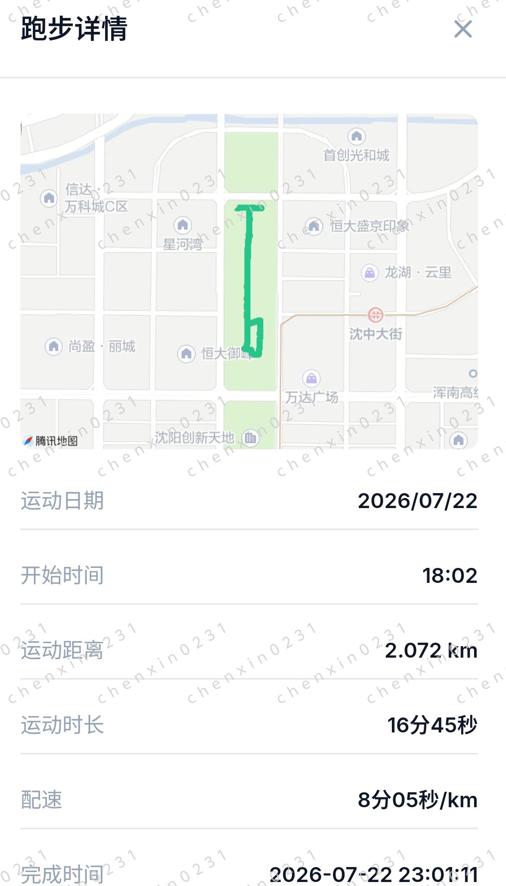

沈阳夜跑日记｜2公里8分配，下班后的治愈时刻

📍 坐标：沈阳·浑南·沈中大街
⏱️ 时间：2026/07/22 18:02（傍晚）
🏃♂️ 距离：2.072 km | 配速：8'05"/km | 时长：16'45"
今晚的沈阳，晚风很柔，不闷不热。
下班后没急着回家，换上跑鞋，打开了 Keep。看着地图上那条从万达广场附近出发，沿着沈中大街一路向北的绿色轨迹，感觉像是在给忙碌的一天"松绑"。
2公里，不多不少。 8分05秒的配速，不快不慢。 这个速度刚好能让我保持微微出汗，呼吸顺畅，不用停下来喘气，也不用担心膝盖压力。
路线很简单：从星河湾附近出发，经过恒大御峰，绕了一小圈折返。腾讯地图上那条绿色的线，记录着我每一步的踏实。没有激烈的冲刺，只有耳机里随机播放的歌单和路边的车流声。
跑完这 16分45秒，看着手机上的完成提示，心里那股紧绷的劲儿散了。有时候，跑步不是为了 PB（个人最好成绩），而是为了在8分05秒的节奏里，找回属于自己的平静。
如果你也在沈阳，或者也在找一个能随时出发的短距离路线，这条浑南的街巷，值得一试。
✅ 真实轨迹 · 路线贴合沈中大街真实路网，无漂移无穿模
✅ 配速自然 · 8'05"养生慢跑节奏，符合下班放松场景
✅ 数据完整 · 距离/时长/配速/地图轨迹全记录，一键同步 Keep
*本文为 RUNPRO 原创跑步记录，数据来自真实运动轨迹模拟，旨在分享城市慢跑的松弛感。